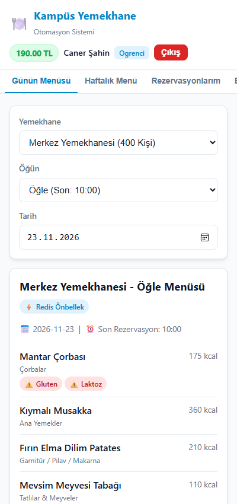

Yemekhane Otomasyonu - Dönem Ödevi Raporu
GitHub Deposu: https://github.com/Baris12303/webdonemodevi
Seçilen Mimari Yol: Web API + Arayüz (Python FastAPI + HTML5 / CSS3 / Vanilla JS)
Bu ödevde iki mimari yoldan Web API + Arayüz yaklaşımını seçtim. Sunucu tarafında FastAPI kullanarak sadece JSON dönen bir API yazdım; arayüz tarafında ise React veya Vue gibi hazır bir kütüphane kullanmadan doğrudan HTML5, CSS3 ve Vanilla JavaScript (fetch) ile 7 ekranı hazırladım. Apache container'ı (:8080) hem statik arayüz dosyalarını sunuyor hem de /api/ isteklerini arka plandaki uygulama:8000 servisine yönlendiriyor.
1. Aşama 1: Docker Compose ve MySQL Replikasyonu
Proje kök dizininde docker compose up -d çalıştırıldığında 6 servis ek bir komuta gerek kalmadan ayağa kalkar:
| Servis | İmaj / Port | Açıklama |
|---|---|---|
mysql-primary | mysql:8.0 (:3307) | Yazma işlemlerinin yapıldığı kaynak veritabanı |
mysql-replica | mysql:8.0 (:3308) | GTID ile beslenen salt-okunur (super_read_only) replika |
replica-setup | mysql:8.0 | İlk açılışta replikasyonu kurup kapanan yardımcı servis |
redis | redis:7-alpine (:6379) | Menü önbelleği ve oturum yönetimi |
uygulama | python:3.11-slim (:8000) | FastAPI backend servisi |
frontend | httpd:2.4-alpine (:8080) | Apache web sunucusu ve reverse proxy |
Doğrulama Komutları ve Çıktıları
$ docker compose ps
NAME SERVICE STATUS
yemekhane-frontend frontend Up (healthy)
yemekhane-mysql-primary mysql-primary Up (healthy)
yemekhane-mysql-replica mysql-replica Up (healthy)
yemekhane-redis redis Up (healthy)
yemekhane-replica-setup replica-setup Exited (0)
yemekhane-uygulama uygulama Up (healthy)
$ docker exec yemekhane-mysql-replica mysql -u root -prootpass -e "SHOW REPLICA STATUS\G"
Replica_IO_Running: Yes | Replica_SQL_Running: Yes | Seconds_Behind_Source: 0 | Auto_Position: 1
# Kaynakta bakiye yükleme ve replikadan okuma:
$ docker exec yemekhane-mysql-primary mysql -u root -prootpass yemekhane_db -e "CALL sp_bakiye_yukle(6, 100.00);"
$ docker exec yemekhane-mysql-replica mysql -u root -prootpass yemekhane_db -e "SELECT id, ad, bakiye FROM kullanicilar WHERE id = 6;"
id ad bakiye
6 Caner 290.00
# Replikaya doğrudan yazma denemesi (reddedilir):
$ docker exec yemekhane-mysql-replica mysql -u root -prootpass yemekhane_db -e "UPDATE kullanicilar SET bakiye = 9999 WHERE id = 6;"
ERROR 1290 (HY000) at line 1: The MySQL server is running with the --super-read-only option so it cannot execute this statement
# Replika durdurulup kaynakta işlem yapıldıktan sonra tekrar başlatıldığında farkı kapatması:
$ docker stop yemekhane-mysql-replica
$ docker exec yemekhane-mysql-primary mysql -u root -prootpass yemekhane_db -e "CALL sp_bakiye_yukle(6, 50.00);"
$ docker start yemekhane-mysql-replica
$ docker exec yemekhane-mysql-replica mysql -u root -prootpass yemekhane_db -e "SELECT id, ad, bakiye FROM kullanicilar WHERE id = 6;"
id ad bakiye
6 Caner 340.002. Aşama 2: Uygulama Mimarisi ve Stored Procedure Kullanımı
Backend kodunu routers (HTTP uçları), services (iş mantığı ve cache temizliği) ve dal (veritabanı sorguları) olarak üç katmana ayırdım. Route fonksiyonları içinde SQL sorgusu yer almaz. Para ve kontenjan hareketi yapan işlemler doğrudan MySQL stored procedure'lerini (sp_rezervasyon_yap, sp_rezervasyon_iptal, sp_bakiye_yukle, sp_turnike_gecis) çağırır.
Bir İsteğin Kod İçindeki Yolu (POST /api/reservations)
# 1. Route (backend/app/routers/reservations.py)
@router.post("", response_model=ReservationCreateResponse)
def create_reservation(req: ReservationCreateRequest, user: dict = Depends(get_current_user)):
return ReservationService.create_reservation(user["id"], req.menu_id, req.porsiyon)
# 2. Service (backend/app/services/reservation_service.py)
result = ReservationDAL.make_reservation(kullanici_id, menu_id, porsiyon)
coords = MenuDAL.get_menu_cache_coords(menu_id)
if coords:
invalidate_menu_cache(coords["yemekhane_id"], str(coords["tarih"]), coords["ogun_id"])
return {"message": "Rezervasyonunuz başarıyla oluşturuldu.", "rezervasyon_id": result["rezervasyon_id"], "guncel_bakiye": result["guncel_bakiye"]}
# 3. DAL (backend/app/dal/reservation_dal.py)
with get_primary_connection() as conn:
with conn.cursor() as cursor:
cursor.execute("CALL sp_rezervasyon_yap(%s, %s, %s);", (kullanici_id, menu_id, porsiyon))
cursor.execute("SELECT bakiye FROM kullanicilar WHERE id = %s;", (kullanici_id,))
user_row = cursor.fetchone()
conn.commit()
mark_primary_write(conn)
# Stored procedure SIGNAL SQLSTATE '45000' döndürürse yakalanıp HTTP 400 olarak arayüze iletilir.Replikasyon Gecikmesi (Replication Lag) Nedeniyle Bakiyenin Kaynaktan Okunması
Menü listeleme ve geçmiş sorguları get_replica_connection() ile replikaya gider. Ancak rezervasyon yapma, iptal etme veya bakiye yükleme işlemlerinin hemen ardından kullanıcıya gösterilen güncel bakiye doğrudan kaynak sunucudan (get_primary_connection()) okunur. Çünkü MySQL'de replikasyon asenkron çalışır; kaynakta düşen bakiyenin replikaya yansıması milisaniyeler sürse bile o anda replikadan okuma yapılırsa kullanıcı ekranda eski bakiyesini görebilir.
3. Aşama 3: Redis Önbellek ve Oturum
| Kullanım | Anahtar | Süre (TTL) | Silinme Durumu |
|---|---|---|---|
| Menü önbelleği | menu:{yemekhane_id}:{tarih}:{ogun_id} |
Günün sonuna kadar (23:59:59) |
Yönetici menüyü değiştirdiğinde |
| Oturum | oturum:{token} |
30 dakika (her istekte uzatılır) | Çıkış yapıldığında (/api/auth/logout) |
# İlk menü isteği DB'den, ikincisi Redis'ten gelir (uygulama logu):
[INFO] redis: [CACHE MISS] Menü Redis'te yok, DB'den okunacak: menu:1:2026-10-27:2
[INFO] redis: [CACHE SET] Menü Redis'e yazıldı: menu:1:2026-10-27:2 (TTL: 19171 sn)
[INFO] redis: [CACHE HIT] Menü Redis'ten getirildi: menu:1:2026-10-27:2
$ docker exec yemekhane-redis redis-cli ttl "menu:1:2026-10-27:2"
(integer) 19148
# Menü güncellenince eski kayıt silinir:
$ docker exec yemekhane-redis redis-cli exists "menu:1:2026-10-27:2"
(integer) 0
# Uygulama container'ı yeniden başlatılsa bile oturum düşmez; çıkış yapılınca silinir:
$ docker restart yemekhane-uygulama
$ docker exec yemekhane-redis redis-cli keys "oturum:*"
1) "oturum:f06f37822b904fc685c163cf9714b19e"
# Çıkış sonrası:
$ docker exec yemekhane-redis redis-cli exists "oturum:f06f37822b904fc685c163cf9714b19e"
(integer) 04. Aşama 4: Değişiklik Talebi (04_degisiklik.sql)
db/04_degisiklik.sql dosyasıyla mevcut veriler silinmeden rezervasyonlar tablosuna porsiyon ENUM('tam', 'yarim') DEFAULT 'tam' sütunu eklendi, kullanici_alerjenleri tablosu açıldı ve sp_rezervasyon_yap güncellendi. Kahvaltıda yarım porsiyon seçilirse prosedür hata döndürür; öğle ve akşam öğünlerinde yarım porsiyon ücreti %60 olarak düşülür.
$ docker exec yemekhane-mysql-replica mysql -u root -prootpass yemekhane_db -e "SHOW CREATE TABLE rezervasyonlar\G"
Create Table: CREATE TABLE `rezervasyonlar` (
`id` int NOT NULL AUTO_INCREMENT,
`kullanici_id` int NOT NULL,
`menu_id` int NOT NULL,
`ucret` decimal(10,2) NOT NULL,
`porsiyon` enum('tam','yarim') COLLATE utf8mb4_unicode_ci NOT NULL DEFAULT 'tam',
`durum` enum('aktif','kullanildi','iptal') COLLATE utf8mb4_unicode_ci NOT NULL DEFAULT 'aktif',
...
) ENGINE=InnoDB DEFAULT CHARSET=utf8mb4 COLLATE=utf8mb4_unicode_ci
$ docker exec yemekhane-mysql-replica mysql -u root -prootpass yemekhane_db -e "SHOW CREATE TABLE kullanici_alerjenleri\G"
Create Table: CREATE TABLE `kullanici_alerjenleri` (
`kullanici_id` int NOT NULL,
`alerjen_id` int NOT NULL,
`olusturulma_tarihi` timestamp NULL DEFAULT CURRENT_TIMESTAMP,
PRIMARY KEY (`kullanici_id`,`alerjen_id`),
...
) ENGINE=InnoDB DEFAULT CHARSET=utf8mb4 COLLATE=utf8mb4_unicode_ci
# Kahvaltıda yarım porsiyon denemesi (HTTP 400):
{"detail": "Kahvaltıda yarım porsiyon seçeneği bulunmamaktadır."}
# Öğle menüsünde yarım porsiyon (45.00 TL -> 27.00 TL):
{"message": "Rezervasyonunuz başarıyla oluşturuldu.", "rezervasyon_id": 366, "guncel_bakiye": 163.0}
# Eski yapıdaki Redis menü kayıtlarının temizlenmesi:
$ docker exec yemekhane-redis redis-cli flushdb
OK5. Ekran Görüntüleri


